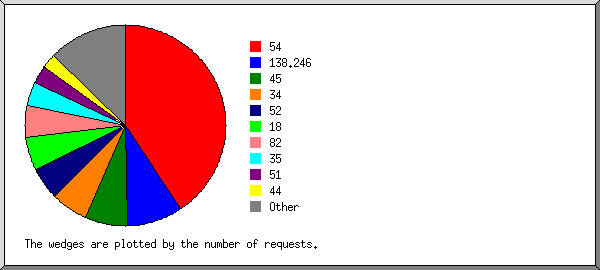
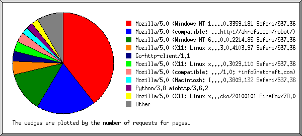
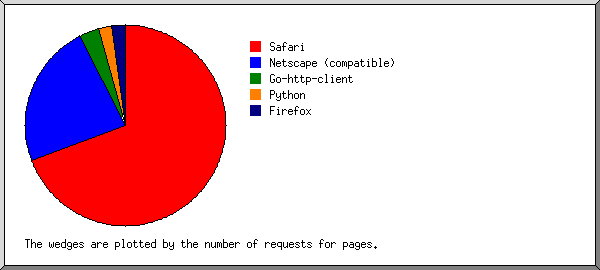
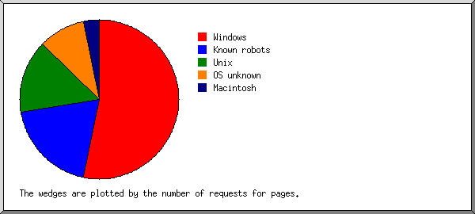
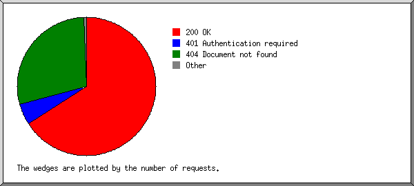
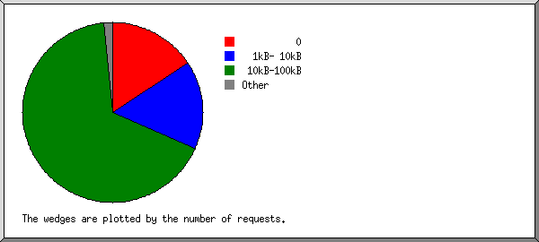
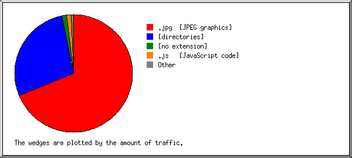
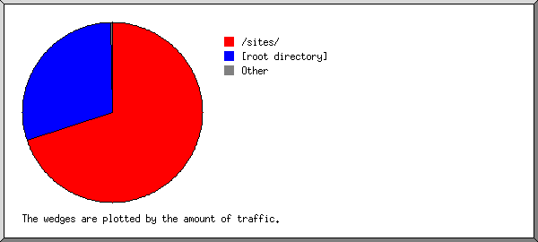
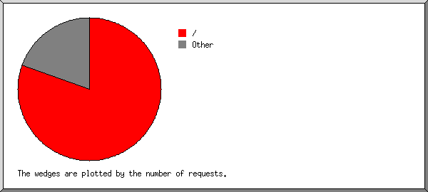

Web Server Statistics for coastsincrisis.net
Web Server Statistics for coastsincrisis.net
Program started on Wed, Dec 02 2020 at 12:50 PM.
Analyzed requests from Sun, Aug 02 2020 at 10:00 PM to Wed, Dec 02 2020 at 8:05 AM (121.42 days).
Web Server Statistics for coastsincrisis.netProgram started on Wed, Dec 02 2020 at 12:50 PM.
Analyzed requests from Sun, Aug 02 2020 at 10:00 PM to Wed, Dec 02 2020 at 8:05 AM (121.42 days).
(Go To: Top | General Summary | Monthly Report | Daily Summary | Hourly Summary | Domain Report | Organization Report | Referring Site Report | Browser Report | Browser Summary | Operating System Report | Status Code Report | File Size Report | File Type Report | Directory Report | Request Report)
Figures in parentheses refer to the 7-day period ending Dec 02 2020 at 12:50 PM.
Successful requests: 133 (14)
Average successful requests per day: 1 (1)
Successful requests for pages: 107 (8)
Failed requests: 69 (1)
Distinct files requested: 24 (81)
Distinct hosts served: 94 (100)
Data transferred: 3.98 megabytes (133.98 kilobytes)
Average data transferred per day: 33.58 kilobytes (19.14 kilobytes)
(Go To: Top | General Summary | Monthly Report | Daily Summary | Hourly Summary | Domain Report | Organization Report | Referring Site Report | Browser Report | Browser Summary | Operating System Report | Status Code Report | File Size Report | File Type Report | Directory Report | Request Report)
Each unit ( ) represents 1 request for a page.
) represents 1 request for a page.
| month | #reqs | #pages | |
|---|---|---|---|
| Aug 2020 | 27 | 22 |    |
| Sep 2020 | 10 | 9 |  |
| Oct 2020 | 35 | 34 |  |
| Nov 2020 | 57 | 39 | |
| Dec 2020 | 4 | 3 | |
Busiest month: Nov 2020 (39 requests for pages).
(Go To: Top | General Summary | Monthly Report | Daily Summary | Hourly Summary | Domain Report | Organization Report | Referring Site Report | Browser Report | Browser Summary | Operating System Report | Status Code Report | File Size Report | File Type Report | Directory Report | Request Report)
Each unit () represents 1 request for a page.
| day | #reqs | #pages | |
|---|---|---|---|
| Sun | 24 | 16 | |
| Mon | 18 | 15 | |
| Tue | 17 | 16 | |
| Wed | 21 | 20 | |
| Thu | 16 | 12 | |
| Fri | 14 | 12 | |
| Sat | 23 | 16 | |
(Go To: Top | General Summary | Monthly Report | Daily Summary | Hourly Summary | Domain Report | Organization Report | Referring Site Report | Browser Report | Browser Summary | Operating System Report | Status Code Report | File Size Report | File Type Report | Directory Report | Request Report)
Each unit () represents 2 requests for pages or part thereof.
| hour | #reqs | #pages | |
|---|---|---|---|
| 0 | 2 | 2 | |
| 1 | 8 | 3 | |
| 2 | 2 | 1 | |
| 3 | 53 | 53 | |
| 4 | 3 | 2 | |
| 5 | 4 | 2 | |
| 6 | 6 | 5 | |
| 7 | 5 | 3 | |
| 8 | 5 | 4 | |
| 9 | 3 | 2 | |
| 10 | 4 | 3 | |
| 11 | 1 | 1 | |
| 12 | 1 | 1 | |
| 13 | 6 | 5 | |
| 14 | 0 | 0 | |
| 15 | 4 | 4 | |
| 16 | 3 | 1 | |
| 17 | 1 | 1 | |
| 18 | 7 | 2 | |
| 19 | 4 | 4 | |
| 20 | 3 | 2 | |
| 21 | 1 | 1 | |
| 22 | 1 | 1 | |
| 23 | 6 | 4 | |
(Go To: Top | General Summary | Monthly Report | Daily Summary | Hourly Summary | Domain Report | Organization Report | Referring Site Report | Browser Report | Browser Summary | Operating System Report | Status Code Report | File Size Report | File Type Report | Directory Report | Request Report)
Listing domains, sorted by the amount of traffic.
| #reqs | %bytes | domain |
|---|---|---|
| 133 | 100% | [unresolved numerical addresses] |
(Go To: Top | General Summary | Monthly Report | Daily Summary | Hourly Summary | Domain Report | Organization Report | Referring Site Report | Browser Report | Browser Summary | Operating System Report | Status Code Report | File Size Report | File Type Report | Directory Report | Request Report)

Listing the top 20 organizations by the number of requests, sorted by the number of requests.
| #reqs | %bytes | organization |
|---|---|---|
| 54 | 80.97% | 54 |
| 12 | 138.246 | |
| 9 | 45 | |
| 8 | 2.36% | 34 |
| 7 | 2.07% | 52 |
| 7 | 2.07% | 18 |
| 7 | 1.70% | 82 |
| 5 | 1.48% | 35 |
| 4 | 2.57% | 51 |
| 3 | 0.89% | 44 |
| 3 | 0.88% | 104 |
| 2 | 1.97% | 157.245 |
| 2 | 0.33% | 46 |
| 2 | 0.59% | 47 |
| 1 | 0.30% | 91 |
| 1 | 0.30% | 92 |
| 1 | 0.30% | 38 |
| 1 | 0.30% | 93 |
| 1 | 0.30% | 212.47 |
| 1 | 0.29% | 3 |
| 2 | 0.33% | [not listed: 2 organizations] |
(Go To: Top | General Summary | Monthly Report | Daily Summary | Hourly Summary | Domain Report | Organization Report | Referring Site Report | Browser Report | Browser Summary | Operating System Report | Status Code Report | File Size Report | File Type Report | Directory Report | Request Report)
Listing referring sites, sorted by the number of requests.
| #reqs | site |
|---|---|
| 12 | https://coastsincrisis.net/ |
(Go To: Top | General Summary | Monthly Report | Daily Summary | Hourly Summary | Domain Report | Organization Report | Referring Site Report | Browser Report | Browser Summary | Operating System Report | Status Code Report | File Size Report | File Type Report | Directory Report | Request Report)

Listing browsers with at least 1 request for a page, sorted by the number of requests for pages.
| #reqs | #pages | browser |
|---|---|---|
| 37 | 37 | Mozilla/5.0 (Windows NT 10.0; Win64; x64)AppleWebKit/537.36 (KHTML, like Gecko) Chrome/66.0.3359.181 Safari/537.36 |
| 18 | 18 | Mozilla/5.0 (compatible; AhrefsBot/7.0; +http://ahrefs.com/robot/) |
| 12 | 12 | Mozilla/5.0 (Windows NT 6.1; Win64; x64) AppleWebKit/537.36 (KHTML, like Gecko) Chrome/40.0.2214.85 Safari/537.36 |
| 4 | 4 | Mozilla/5.0 (X11; Linux x86_64) AppleWebKit/537.36 (KHTML, like Gecko) Chrome/83.0.4103.97 Safari/537.36 |
| 4 | 3 | Go-http-client/1.1 |
| 3 | 3 | Mozilla/5.0 (X11; Linux x86_64) AppleWebKit/537.36 (KHTML, like Gecko) Chrome/58.0.3029.110 Safari/537.36 |
| 3 | 3 | Mozilla/5.0 (compatible; NetcraftSurveyAgent/1.0; +info@netcraft.com) |
| 2 | 2 | Mozilla/5.0 (Macintosh; Intel Mac OS X 10_14_6) AppleWebKit/537.36 (KHTML, like Gecko) Chrome/76.0.3809.132 Safari/537.36 |
| 2 | 2 | Python/3.8 aiohttp/3.6.2 |
| 7 | 2 | Mozilla/5.0 (X11; Linux x86_64; rv:78.0) Gecko/20100101 Firefox/78.0 |
| 2 | 2 | Mozilla/5.0 (X11; Linux x86_64) AppleWebKit/537.36 (KHTML, like Gecko) Chrome/57.0.2987.110 Safari/537.36 |
| 1 | 1 | Mozilla/5.0 (X11; Linux x86_64) AppleWebKit/537.36 (KHTML, like Gecko) Chrome/78.0.3904.108 Safari/537.36 |
| 1 | 1 | Mozilla/5.0 (Windows NT 10.0; Win64; x64) AppleWebKit/537.36 (KHTML, like Gecko) Chrome/43.0.2357 Safari/537.36 |
| 1 | 1 | Mozilla/5.0 (Macintosh; Intel Mac OS X 10_9_3) AppleWebKit/537.36 (KHTML, like Gecko) Chrome/35.0.1916.47 Safari/537.36 |
| 6 | 1 | Mozilla/5.0 (X11; Linux x86_64) AppleWebKit/537.36 (KHTML, like Gecko) HeadlessChrome/86.0.4240.75 Safari/537.36 |
| 1 | 1 | Mozilla/5.0 (X11; Linux x86_64) AppleWebKit/537.36 (KHTML, like Gecko) Chrome/85.0.4183.83 Safari/537.36 |
| 2 | 1 | Mozilla/5.0 (compatible; SemrushBot/6~bl; +http://www.semrush.com/bot.html) |
| 14 | 0 | [not listed: 2 browsers] |
(Go To: Top | General Summary | Monthly Report | Daily Summary | Hourly Summary | Domain Report | Organization Report | Referring Site Report | Browser Report | Browser Summary | Operating System Report | Status Code Report | File Size Report | File Type Report | Directory Report | Request Report)

Listing browsers with at least 1 request for a page, sorted by the number of requests for pages.
| # | #reqs | #pages | browser |
|---|---|---|---|
| 1 | 71 | 65 | Safari |
| 71 | 65 | Safari/537 | |
| 2 | 36 | 22 | Netscape (compatible) |
| 3 | 4 | 3 | Go-http-client |
| 4 | 3 | Go-http-client/1 | |
| 4 | 2 | 2 | Python |
| 2 | 2 | Python/3 | |
| 5 | 7 | 2 | Firefox |
| 7 | 2 | Firefox/78 |
(Go To: Top | General Summary | Monthly Report | Daily Summary | Hourly Summary | Domain Report | Organization Report | Referring Site Report | Browser Report | Browser Summary | Operating System Report | Status Code Report | File Size Report | File Type Report | Directory Report | Request Report)

Listing operating systems, sorted by the number of requests for pages.
| # | #reqs | #pages | OS |
|---|---|---|---|
| 1 | 51 | 50 | Windows |
| 39 | 38 | Windows NT | |
| 12 | 12 | Unknown Windows | |
| 2 | 31 | 18 | Known robots |
| 3 | 24 | 14 | Unix |
| 24 | 14 | Linux | |
| 4 | 11 | 9 | OS unknown |
| 5 | 3 | 3 | Macintosh |
(Go To: Top | General Summary | Monthly Report | Daily Summary | Hourly Summary | Domain Report | Organization Report | Referring Site Report | Browser Report | Browser Summary | Operating System Report | Status Code Report | File Size Report | File Type Report | Directory Report | Request Report)

Listing status codes, sorted numerically.
| #reqs | status code |
|---|---|
| 133 | 200 OK |
| 10 | 401 Authentication required |
| 1 | 403 Access forbidden |
| 58 | 404 Document not found |
(Go To: Top | General Summary | Monthly Report | Daily Summary | Hourly Summary | Domain Report | Organization Report | Referring Site Report | Browser Report | Browser Summary | Operating System Report | Status Code Report | File Size Report | File Type Report | Directory Report | Request Report)

| size | #reqs | %bytes |
|---|---|---|
| 0 | 21 | |
| 1B- 10B | 0 | |
| 11B- 100B | 0 | |
| 101B- 1kB | 1 | |
| 1kB- 10kB | 21 | 1.66% |
| 10kB-100kB | 89 | 29.70% |
| 100kB- 1MB | 0 | |
| 1MB- 10MB | 1 | 68.63% |
(Go To: Top | General Summary | Monthly Report | Daily Summary | Hourly Summary | Domain Report | Organization Report | Referring Site Report | Browser Report | Browser Summary | Operating System Report | Status Code Report | File Size Report | File Type Report | Directory Report | Request Report)

Listing extensions with at least 0.1% of the traffic, sorted by the amount of traffic.
| #reqs | %bytes | extension |
|---|---|---|
| 1 | 68.63% | .jpg [JPEG graphics] |
| 107 | 28.17% | [directories] |
| 6 | 1.42% | [no extension] |
| 2 | 1.17% | .js [JavaScript code] |
| 15 | 0.57% | .txt [Plain text] |
| 2 | 0.04% | [not listed: 1 extension] |
(Go To: Top | General Summary | Monthly Report | Daily Summary | Hourly Summary | Domain Report | Organization Report | Referring Site Report | Browser Report | Browser Summary | Operating System Report | Status Code Report | File Size Report | File Type Report | Directory Report | Request Report)

Listing directories with at least 0.01% of the traffic, sorted by the amount of traffic.
| #reqs | %bytes | directory |
|---|---|---|
| 5 | 69.84% | /sites/ |
| 127 | 29.86% | [root directory] |
| 1 | 0.30% | /.git/ |
(Go To: Top | General Summary | Monthly Report | Daily Summary | Hourly Summary | Domain Report | Organization Report | Referring Site Report | Browser Report | Browser Summary | Operating System Report | Status Code Report | File Size Report | File Type Report | Directory Report | Request Report)

Listing files with at least 20 requests, sorted by the number of requests.
| #reqs | %bytes | last time | file |
|---|---|---|---|
| 107 | 28.17% | Dec/ 2/20 5:30 AM | / |
| 23 | 6.79% | Nov/14/20 3:16 AM | /?18.237.219.24 |
| 17 | 5.02% | Oct/15/20 3:20 AM | /?46.229.168.153 |
| 13 | 1.77% | Sep/19/20 1:10 PM | /?104.198.183.111 |
| 26 | 71.83% | Dec/ 2/20 5:30 AM | [not listed: 12 files] |